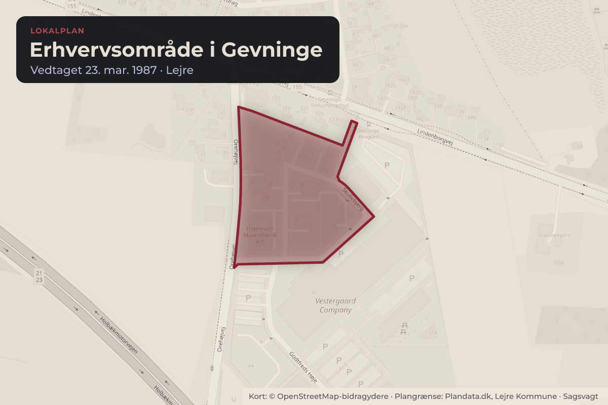
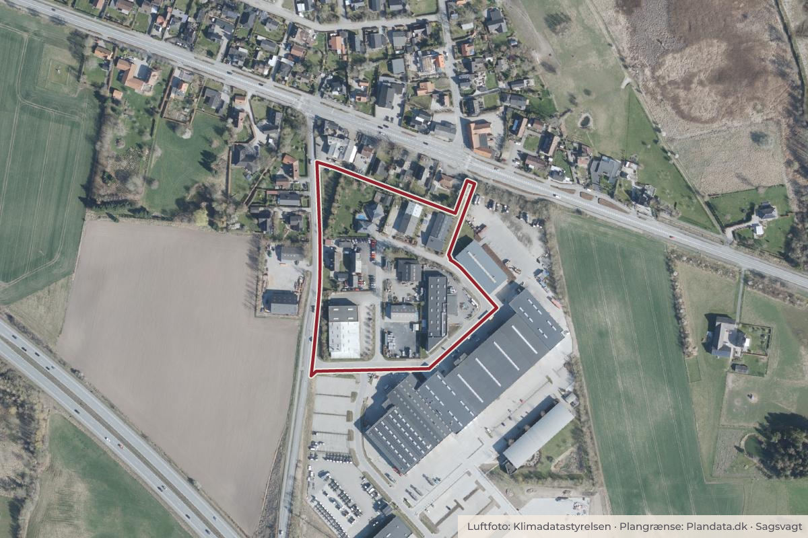

Besluttet 8. september, Udvalget for Trafik, Miljø & Byggeri, Lejre
TMB - Grundlagssag for Lokalplan LK 106 for et erhvervsområde ved Gevninge
Med Kommuneplan 2021 blev den nuværende planmæssige ramme for erhvervsområdet syd for Lindenborgvej i Gevninge fastlagt. I 2025 blev der udarbejdet en støjrapport, der afdækker mulighederne for støjreduktion i området.
Byggeri og lokalplanerErhverv og job

Kort: © OpenStreetMap-bidragydere. Plangrænse: Plandata.dk, Lejre Kommune.

Har du et billede fra Erhvervsområde i Gevninge? Send det til os
Kort fortalt
- Forslaget
- Opsamling på borgermøde og høringssvar tages til efterretning
- Status på statens prioritering af midler til støjafskærmning tages til efterretning
- Principperne 1-6 vedtages som styrende i udarbejdelse af lokalplanen
- Hvem
- Udvalget for Trafik, Miljø & Byggeri, Lejre Kommune
- Hvornår
- Tirsdag 8. september 2026
- Status
- Besluttet. Ad. 1) - ad. 2) Indstillingerne tiltrådt. Ad. 3) Martin Lastrup Hviid (V) stillede følgende ændringsforslag: Da forudsætningerne har ændret sig i forhold til den politiske beslutning, stiller Venstre derfor følgende ændringsforslag: At der ikke disponeres og opstilles kriterier for erhvervsbyggeri på arealet, før muligheden for etablering af en jordvold på arealet langs motorvejen er undersøgt. 4 stemte for, 1 imod.Beslutningen er forkortet her. Læs hele beslutningen
Vedtaget 4–1
- For 4
- Imod 1
- Undlod 0
For
- Steen Finn Hansen (O)
- Grethe Nørtoft Saabye (C)
- Ivan Mott (Ø)
- Martin
Imod
- Martin Lastrup Hviid (V) - i alt 1 - med følgende bemærkning: Venstre kan
Læs hele sagen Kommunens egen tekst
Indstilling
Direktionen indstiller:
1. at opsamling på borgermøde og høringssvar tages til efterretning
2. at status på statens prioritering af midler til støjafskærmning tages til efterretning
3. at principperne 1-6 vedtages som styrende i udarbejdelse af lokalplanen
Sagsfremstilling
Sagens historik
Området syd for Lindenborgvej blev første gang udlagt som erhvervsområde i Kommuneplan
2017, hvor der blev reserveret et mindre areal til erhvervsformål. I 2020 modtog
administrationen en anmodning om udarbejdelse af en lokalplan, der skulle muliggøre
etablering af en støjvold på et areal, der rakte ud over erhvervsområdets daværende
afgrænsning. Ønsket om etablering af en støjvold blev efterfølgende drøftet politisk i
forbindelse med Kommuneplan 2021. I den forbindelse blev det besluttet ikke at arbejde videre
med en selvstændig støjvoldsløsning. I stedet ønskede Kommunalbestyrelsen at udvide
erhvervsområdet, og at placering af bebyggelse i erhvervsområdet skulle planlægges, så den
kunne fungere som støjafskærmning mod Gevninge by.
Støjrapport
I 2025 blev der udarbejdet en støjrapport om mulighederne for støjreduktion ved bebyggelse af
erhvervsområdet. Rapporten viser, at selvom man bygger én lang karré i 10 meters højde
langs rammeområdets sydlige skel, kan der kun opnås 1-2 dB reduktion af støj i den
eksisterende bebyggelse i Gevninge. Støjrapporten viser, at der ville kunne opnås markant
støjreduktion i Gevninge og Lindenborg, hvis Vejdirektoratet opstiller en 6 meter høj støjskærm
langs motorvejen. Her vil støjen kunne reduceres op til 5 db.
Statens pulje til støjreduktion
Gevninge og Lindenborg er i den nationale støjhandlingsplan fra 2024 udpeget som særligt
støjbelastet boligområde. Som led i planen skal Folketingets Transportudvalg prioritere de
statslige midler til etablering af støjskærme mellem de udpegede områder. Vejdirektoratet,
oplyser, at man afventer den politiske prioritering af støjpuljemidlerne, og at det forventes i
efteråret 2026.
Borgermøde
Borgermødet blev afholdt den 30. april 2026 med deltagelse af ca. 120 borgere. Formålet med
mødet var at orientere om rammerne for lokalplanlægningen, præsentere resultaterne af den
gennemførte støjundersøgelse samt indsamle input til det videre planarbejde. Administrationen
fremlagde de planmæssige rammer og mulighed for at bruge lokalplanen til at løse
trafikmæssige problematikker i området. Herudover fremlagde ejerne deres ønsker til, hvad
planlægningen skal muliggøre af erhvervsforhold.
Første del af mødet havde fokus på støjforholdene i området. Det var tydeligt, at støj opleves
som en væsentlig udfordring for mange borgere i Gevninge. Borgerne pegede på, at det ikke
alene er støjen fra motorvejen, men også trafikstøjen fra Lindenborgvej, som påvirker
hverdagen. Der var en betydelig efterspørgsel på støjreducerende tiltag, som ligger uden for
lokalplanlægningens rammer, herunder hastighedsreduktion, støjreducerende asfalt og øget
fokus på etablering af en støjskærm langs motorvejen.
Herudover fremhævede en gruppe borgere ønsket om at genoptage arbejdet med en jordvold
langs motorvejen, da denne af nogle borgere vurderes som den mest effektive løsning på
områdets støjproblemer.
Anden del af mødet omhandlede den kommende planlægning for erhvervsområdet. Der var
både interesse for de muligheder, som erhvervsudviklingen kan skabe i form af lokale
arbejdspladser og bekymring for områdets omfang og påvirkning af de omkringliggende
boligområder. Borgerne var særligt bekymrede for øget trafikbelastning, og havde stort fokus
på de trafikale løsninger. Herudover var der ønske om arkitektonisk kvalitet, markante grønne
elementer og beplantning samt en planlægning, der tager hensyn til de nærmeste naboer.
Referat fra borgermødet er vedlagt som bilag 1. Administrationen og grundejernes
præsentation fra borgermødet er vedlagt som bilag 2. Efter borgermødet har administrationen
modtaget to høringssvar. De er vedlagt som bilag 3.
Principper for planlægningen
På baggrund af det afholdte borgermøde og administrationens indledende analyser opstiller
administrationen seks principper for det videre arbejde med planlægningen. De er nærmere
beskrevet i Bilag 4. De seks principper er:
1. Støj og disponering af området: Lokalplanen skal disponere erhvervsområdet, sådan at
bebyggelse understøtter støjreduktion lokalt.
2. Anvendelse: Planlægningen skal understøtte etablering af et varieret erhvervsområde med
mulighed for lokal erhvervsudvikling og arbejdspladser i Gevninge.
3. Trafik og vejstruktur: Planlægningen skal understøtte aflastning af Orehøjvej.
4. Skovbyggelinje og landskabelige hensyn: Planlægningen skal tage højde for de
landskabelige hensyn.
5. Arkitektur, materialer og beplantning: Lokalplanen skal sikre et grønt og imødekommende
erhvervsområde
6. Regnvand og grundvandshensyn: Planlægningen skal fastlægge rammer for lokal
regnvandshåndtering.
Administrationens vurdering
Administrationen vurderer, at der på baggrund af kommuneplanens udlæg af området til erhvervsformål, de gennemførte
undersøgelser samt input fra borgermøde og høringssvar, er et tilstrækkeligt grundlag for at igangsætte den konkrete
lokalplanlægning for området.
Den gennemførte støjrapport viser, at erhvervsbebyggelse inden for området kun i begrænset omfang kan bidrage til at
reducere støjpåvirkningen af de eksisterende boligområder i Gevninge. Rapporten peger samtidig på, at en støjskærm langs
motorvejen vil kunne medføre en væsentligt større støjreduktion. Administrationen følger derfor fortsat sagen om statens
prioritering af midler til støjafskærmning og afventer Vejdirektoratets udmelding om, hvorvidt Gevninge og Lindenborg
prioriteres i den kommende udmøntning af støjpuljen.
Såfremt der ønskes arbejdet videre med en løsning baseret på etablering af en jordvold langs motorvejen, vurderer
administrationen, at der vil være behov for supplerende analyser. Disse analyser skal belyse voldens nødvendige højde,
udstrækning, arealbehov, miljøpåvirkninger samt forventede støjreducerende effekt, før der kan tages stilling til løsningens
realiserbarhed.
Administrationen vurderer endvidere, at de foreslåede principper udgør et hensigtsmæssigt grundlag for det videre planarbejde.
Principperne sikrer, at der arbejdes videre med de centrale temaer, som er fremhævet gennem den indledende dialog med
borgere og grundejere.
På den baggrund anbefaler administrationen, at de beskrevne principper lægges til grund for udarbejdelsen af Lokalplan LK
106, og at de nødvendige analyser gennemføres som en del af den videre planproces.
Vurdering af klimapåvirkning
Etableringen af erhvervsområdet vil medføre en klimabelastning i form af ressourceforbrug og CO₂-udledning fra byggemodning
og opførelse af ny bebyggelse. Områdets udvikling forventes desuden at generere øget transport til og fra området, herunder
mere person- og godstrafik, hvilket vil bidrage til en øget udledning af drivhusgasser.
I den videre planlægning bliver der arbejdet med beplantning, biodiversitet og klimatilpasning med henblik på at understøtte
områdets natur- og miljøkvaliteter.
Beslutning
Ad. 1) - ad. 2) Indstillingerne tiltrådt.
Ad. 3) Martin Lastrup Hviid (V) stillede følgende ændringsforslag:
Da forudsætningerne har ændret sig i forhold til den politiske beslutning, stiller Venstre
derfor følgende ændringsforslag:
At der ikke disponeres og opstilles kriterier for erhvervsbyggeri på arealet, før muligheden
for etablering af en jordvold på arealet langs motorvejen er undersøgt. Det er et krav, at
undersøgelsen indeholder beregninger, der kan påvise effekten i decibel svarende til
effekten af et støjværn opstillet af Vejdirektoratet. Efterfølgende fremlægges en sag til
politisk behandling.
At en vejledende borgerafstemning blandt indbyggerne i Gevninge, Abbetved og
Lindenborg indgår i det endelige beslutningsgrundlag for så vidt angår disponeringen af
arealet - herunder eventuel etablering af en jordvold.
For ændringsforslaget stemte Martin Lastrup Hviid (V) - i alt 1.
Imod ændringsforslaget stemte Steen Finn Hansen (O), Grethe Nørtoft Saabye (C), Ivan
Mott (Ø) og Martin Stokholm (A) - i alt 4.
Ændringsforslaget blev ikke vedtaget.
Indstillingen om at principperne 1-6 vedtages som styrende i udarbejdelse af lokalplanen
blev vedtaget.
For stemte: Steen Finn Hansen (O), Grethe Nørtoft Saabye (C), Ivan Mott (Ø) og Martin
Stokholm (A) - i alt 4.
Imod stemte: Martin Lastrup Hviid (V) - i alt 1 - med følgende bemærkning: Venstre kan
ikke godkende de 6 opstillede kriterier, da udlægning af arealet til erhvervsbyggeri i
klasse 1-3 i høj grad var begrundet i, at bygningerne ville virke støjreducerende for de
hårdt trafikstøjplagede beboere i Gevninge og Lindenborg nord for Holbækmotorvejen og
ad Lindenborgvejen. Administrationen påviser nu, at der ingen mærkbar effekt vil være i
forhold til støjreduktion ved erhvervsbyggeri.
Martin Lastrup Hviid begærer sagen i Kommunalbestyrelsen.
Kilde: Lejre Kommune, Udvalget for Trafik, Miljø & Byggeri, referat fra mødet tirsdag 8. september 2026, punkt 7. Læs den originale sag hos kommunen.